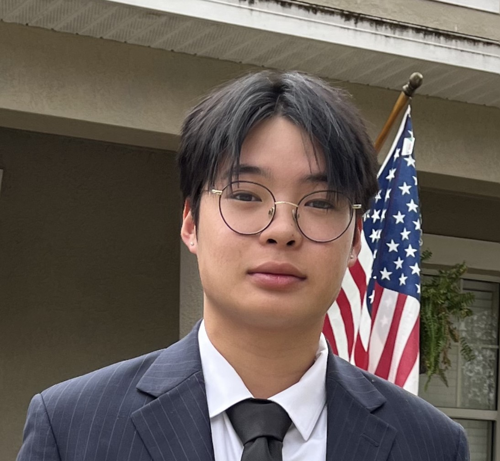
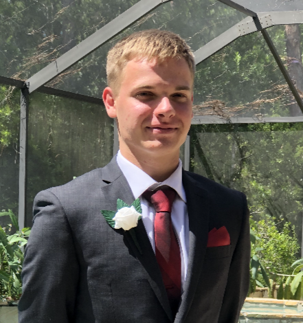
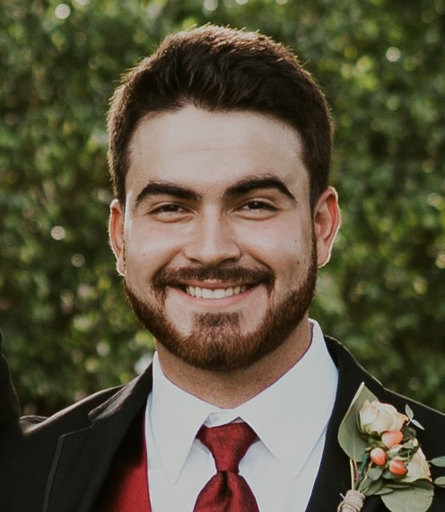

Andrew (Drew) Vo

Drew is a senior majoring in Cybersecurity at the University of South Florida. He was born and raised in Tampa, so all he's ever known is sunshine, beaches, and palm trees. Aside from pursuing his education, Drew enjoys collecting vintage clothes, reading, and working on cars. When he graduates, he hopes to find himself working at some tech start-up utilizing the knowledge he's gained while also working to create an online business selling clothes.
James Vesta

James is a Senior at USF studying Cybersecurity. He is currently in the Army Reserve Officer Training Corps and plans to pursue a carreer that involves Cybersecurity in the Army. He enjoys the programming aspect of Cybersecurity. My hobbies include playing video games and working out. James is scheduled to graduate in May 2023.
Andrew Klotz

Andrew is currently a Senior at USF and is graduating in May of 2023. He has a 3.6 GPA and has experience working with security tools such as Carbon Black, Proofpoint, and Zscaler. Andrew's hobbies consist of Ultimate Frisbee and Golf. His plans after graduating are to pursue a career in Cybersecurity, hopefully as a Security Engineer.